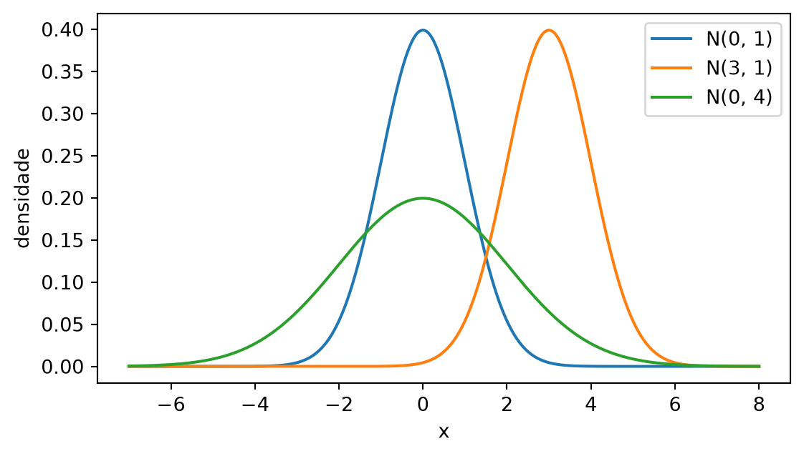
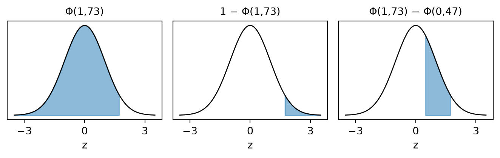

Distribuição Normal
Nota
Esta seção corresponde à seção 7.4.2 de Bussab e Morettin (2023).
Muitas medidas se distribuem em forma de sino: a maior parte dos valores perto do centro, cada vez menos valores à medida que se afastam, e mais ou menos a mesma quantidade dos dois lados. Segundo Bussab e Morettin (2023), as origens do modelo estão nos trabalhos de Gauss sobre erros de observações astronômicas, por volta de 1810. Os erros de medida repetida de uma mesma grandeza têm essa forma, e o mesmo acontece com as alturas dos adultos de uma população ou com o peso de pacotes enchidos por uma máquina.
O modelo para esse sino é a distribuição normal, ou gaussiana. É o modelo contínuo mais importante da estatística, e a base de boa parte da inferência.
O modelo
A variável aleatória \(X\) tem distribuição normal com parâmetros \(\mu\) (qualquer real) e \(\sigma^2 > 0\), \(X \sim N(\mu, \sigma^2)\), quando sua densidade, para todo \(x\) real, é
\[ f(x) = \frac{1}{\sigma\sqrt{2\pi}}\, e^{-(x - \mu)^2 / (2\sigma^2)}. \]
Seu valor médio é \(E(X) = \mu\) e sua variância é \(\mathrm{Var}(X) = \sigma^2\).
A fórmula tem duas partes. A exponencial \(e^{-(x - \mu)^2/(2\sigma^2)}\) dá a forma do sino. A constante \(1/(\sigma\sqrt{2\pi})\) na frente só ajusta a escala: é o número que faz a área total sob a curva ser 1. Que essa constante seja a certa é um fato do cálculo, que aqui fica sem demonstração. O formato do gráfico se lê direto no expoente:
- Máximo em \(\mu\). O expoente \(-(x - \mu)^2/(2\sigma^2)\) é zero em \(x = \mu\) e negativo em qualquer outro ponto.
- Simetria em torno de \(\mu\). O expoente só depende de \((x - \mu)^2\): um ponto a uma distância \(d\) à direita de \(\mu\) tem a mesma densidade que um à distância \(d\) à esquerda.
- Largura dada por \(\sigma\). Quanto maior \(\sigma\), mais devagar o expoente decresce, e mais espalhado o sino. Os pontos de inflexão, onde a curva muda de concavidade, ficam em \(\mu - \sigma\) e \(\mu + \sigma\).
- Caudas que nunca zeram. A densidade é positiva em toda a reta, mas cai muito rápido longe de \(\mu\).
Quanto maior \(\sigma\), mais baixo o pico: a altura máxima, em \(x = \mu\), é \(1/(\sigma\sqrt{2\pi})\). O sino alarga e abaixa na mesma proporção, para a área continuar igual a 1.
AvisoO segundo argumento é a variância
Em \(N(\mu, \sigma^2)\), o segundo número é a variância, não o desvio-padrão. Em \(N(3, 16)\), a variância é 16 e o desvio-padrão é \(\sigma = \sqrt{16} = 4\). Para padronizar, como se faz adiante, tire a raiz antes: dividir por 16 é calcular como se o desvio-padrão fosse 16, numa normal quatro vezes mais espalhada que a verdadeira.
A normal padrão
Entre todas as normais, uma serve de referência: a de média 0 e variância 1, a normal padrão \(Z \sim N(0, 1)\), com densidade \(e^{-z^2/2}/\sqrt{2\pi}\). Sua f.d.a. tem notação própria:
\[ \begin{aligned} \Phi(z) &= P(Z \le z) \\ &= \int_{-\infty}^{z} \frac{1}{\sqrt{2\pi}}\, e^{-t^2/2}\,dt. \end{aligned} \]
A função \(e^{-t^2/2}\) não tem primitiva em termos de funções elementares: não existe uma fórmula fechada para \(\Phi\). Os valores de \(\Phi\) foram calculados numericamente uma vez e reunidos numa tabela, e é com ela que se calculam as probabilidades da normal. Três regras levam qualquer pergunta à tabela. A cauda à direita é o complementar da área acumulada:
\[ P(Z > z) = 1 - \Phi(z). \]
A curva é simétrica em torno de 0, e a área à esquerda de \(-z\) é igual à área à direita de \(z\). Por isso basta tabelar \(z \ge 0\):
\[ \Phi(-z) = 1 - \Phi(z). \]
A área entre \(a\) e \(b\) é a área até \(b\) menos a área até \(a\), como na f.d.a. da seção 4.3:
\[ P(a \le Z \le b) = \Phi(b) - \Phi(a). \]
Como \(Z\) é contínua, tanto faz \(<\) ou \(\le\) em qualquer uma delas.
Usando a tabela da normal
A tabela da normal padrão (PDF), para imprimir ou consultar, dá \(\Phi(z) = P(Z \le z)\) para \(z\) de 0,00 a 3,49, com quatro casas decimais. A linha é o valor de \(z\) até a primeira casa decimal, e a coluna é a segunda casa. Antes de consultar, arredonde \(z\) para duas casas.
Para achar \(\Phi(1{,}73)\), desça até a linha 1,7 e siga até a coluna 0,03: o valor é 0,9582. As outras probabilidades saem desse número pelas três regras, como na Figura 2. Três exemplos, todos com \(z = 1{,}73\) (seção 7.4.2 de Bussab e Morettin (2023)):
Cauda à direita:
\[ \begin{aligned} P(Z > 1{,}73) &= 1 - \Phi(1{,}73) \\ &= 1 - 0{,}9582 = 0{,}0418. \end{aligned} \]
\(z\) negativo: pela simetria, \(\Phi(-1{,}73) = 1 - \Phi(1{,}73)\), o mesmo valor \(0{,}0418\).
Intervalo: na linha 0,4 e coluna 0,07, \(\Phi(0{,}47) = 0{,}6808\). Então
\[ \begin{aligned} P(0{,}47 \le Z \le 1{,}73) &= \Phi(1{,}73) - \Phi(0{,}47) \\ &= 0{,}9582 - 0{,}6808 \\ &= 0{,}2774. \end{aligned} \]

Algumas tabelas trazem outro formato: a área entre 0 e \(z\), \(P(0 \le Z \le z)\), e não a área acumulada desde \(-\infty\). É o caso da Tabela III de Bussab e Morettin (2023). Como a metade à esquerda de 0 tem área 0,5, os dois formatos se convertem somando ou tirando 0,5:
\[ \begin{aligned} P(0 \le Z \le 1{,}73) &= 0{,}9582 - 0{,}5 \\ &= 0{,}4582. \end{aligned} \]
Padronização
A tabela é só da normal padrão. Ela serve para todas as outras por causa de uma transformação linear.
Se \(X \sim N(\mu, \sigma^2)\), a variável padronizada é
\[ Z = \frac{X - \mu}{\sigma}. \]
O valor \(z = (x - \mu)/\sigma\) diz a quantos desvios-padrão \(x\) está da média: positivo acima dela, negativo abaixo. A média e a variância de \(Z\) saem das regras da seção 3.2, que valem também para variáveis contínuas (seção 4.2). Escrevendo \(Z = aX + b\) com \(a = 1/\sigma\) e \(b = -\mu/\sigma\):
\[ \begin{aligned} E(Z) &= \frac{1}{\sigma}\,E(X) - \frac{\mu}{\sigma} \\ &= \frac{\mu}{\sigma} - \frac{\mu}{\sigma} = 0, \\ \mathrm{Var}(Z) &= \frac{1}{\sigma^2}\,\mathrm{Var}(X) \\ &= \frac{\sigma^2}{\sigma^2} = 1. \end{aligned} \]
Subtrair \(\mu\) leva o centro para 0, e dividir por \(\sigma\) faz a dispersão virar 1. O que as regras não mostram é que \(Z\) continua sendo normal. Esse é um fato sobre a normal, aceito aqui sem prova. Com ele, esse fato, \(Z \sim N(0, 1)\), e toda pergunta sobre \(X\) vira uma pergunta sobre \(Z\):
\[ P(a \le X \le b) = P\left(\frac{a - \mu}{\sigma} \le Z \le \frac{b - \mu}{\sigma}\right). \]
Por exemplo, com \(X \sim N(3, 16)\), a variância é 16 e o desvio-padrão é \(\sigma = 4\). Para \(P(2 \le X \le 5)\):
\[ \begin{aligned} P(2 \le X \le 5) &= P\left(\frac{2 - 3}{4} \le Z \le \frac{5 - 3}{4}\right) \\ &= P(-0{,}25 \le Z \le 0{,}50) \\ &= \Phi(0{,}50) - \Phi(-0{,}25). \end{aligned} \]
Na tabela, \(\Phi(0{,}50) = 0{,}6915\) e \(\Phi(0{,}25) = 0{,}5987\). Pela simetria, \(\Phi(-0{,}25) = 1 - 0{,}5987 = 0{,}4013\). Então
\[ \begin{aligned} P(2 \le X \le 5) &= 0{,}6915 - 0{,}4013 \\ &= 0{,}2902. \end{aligned} \]
Pouco menos de 30% dos valores de \(X\) caem entre 2 e 5, um intervalo que vai de um quarto de desvio-padrão abaixo da média até meio desvio-padrão acima.
A quantos desvios-padrão
Quanto da probabilidade fica até 1, 2 e 3 desvios-padrão da média? Pela padronização,
\[ \begin{aligned} &P(\mu - k\sigma \le X \le \mu + k\sigma) \\ &\quad = P(-k \le Z \le k), \end{aligned} \]
e a resposta é a mesma para qualquer normal. Pela regra do intervalo e pela simetria,
\[ \begin{aligned} P(-k \le Z \le k) &= \Phi(k) - \Phi(-k) \\ &= \Phi(k) - [1 - \Phi(k)] \\ &= 2\,\Phi(k) - 1. \end{aligned} \]
Com os valores da tabela:
| \(k\) | \(\Phi(k)\) | \(2\,\Phi(k) - 1\) |
|---|---|---|
| 1 | 0,8413 | 0,6826 |
| 2 | 0,9772 | 0,9544 |
| 3 | 0,9987 | 0,9974 |
Cerca de 68% dos valores ficam a menos de um desvio-padrão da média, 95% a menos de dois, e 99,7% a menos de três. Numa normal qualquer, um valor a mais de três desvios-padrão da média é raro: fora dessa faixa fica só \(1 - 0{,}9974 = 0{,}0026\) da probabilidade, somando os dois lados.
Um exemplo completo
No Exemplo 7.9 de Bussab e Morettin (2023), os depósitos num banco durante janeiro seguem uma normal com média R$ 10.000 e desvio-padrão R$ 1.500, ou seja, \(X \sim N(10.000,\ 1.500^2)\). Sorteado um depósito ao acaso, qual a probabilidade de ele ser (a) de até R$ 10.000; (b) de pelo menos R$ 10.000; (c) entre R$ 12.000 e R$ 15.000; (d) maior que R$ 20.000?
(a) e (b). O valor 10.000 é a própria média, e \(z = 0\). Então \(P(X \le 10.000) = \Phi(0) = 0{,}5\) e, pela simetria em torno da média, \(P(X \ge 10.000) = 0{,}5\).
(c). Padronizando as duas pontas e arredondando \(z\) para duas casas:
\[ \begin{aligned} z_1 &= \frac{12.000 - 10.000}{1.500} \\ &= \frac{2.000}{1.500} \approx 1{,}33, \\ z_2 &= \frac{15.000 - 10.000}{1.500} \\ &= \frac{5.000}{1.500} \approx 3{,}33. \end{aligned} \]
Na tabela, \(\Phi(3{,}33) = 0{,}9996\) e \(\Phi(1{,}33) = 0{,}9082\). Então
\[ \begin{aligned} &P(12.000 \le X \le 15.000) \\ &\quad = \Phi(3{,}33) - \Phi(1{,}33) \\ &\quad = 0{,}9996 - 0{,}9082 \\ &\quad = 0{,}0914. \end{aligned} \]
(d). Padronizando,
\[ \begin{aligned} z &= \frac{20.000 - 10.000}{1.500} \\ &= \frac{10.000}{1.500} \approx 6{,}67. \end{aligned} \]
A tabela para em 3,49, onde \(\Phi\) já vale 0,9998. Para \(z \approx 6{,}67\), \(P(X > 20.000) = 1 - \Phi(6{,}67)\) é praticamente zero: um depósito a quase 7 desvios-padrão da média quase nunca ocorre neste modelo.
ImportanteNem todo dado é normal
Dados com cauda longa à direita, como renda, tempo de espera numa fila ou valor de indenizações de seguro, não são normais, e usar a normal para eles subestima a chance de valores muito altos. Antes de usar o modelo, olhe o histograma dos dados (seção 1.5) e desconfie de assimetria.
Resumo
| Item | Normal \(N(\mu, \sigma^2)\) |
|---|---|
| Densidade | sino simétrico em torno de \(\mu\), com largura dada por \(\sigma\) |
| \(E(X)\), \(\mathrm{Var}(X)\) | \(\mu\), \(\sigma^2\) (o segundo argumento é a variância) |
| Padronização | \(Z = (X - \mu)/\sigma \sim N(0, 1)\) |
| f.d.a. padrão | \(\Phi(z) = P(Z \le z)\), sem fórmula fechada: valores na tabela |
| Regras da tabela | \(P(Z > z) = 1 - \Phi(z)\); \(\Phi(-z) = 1 - \Phi(z)\); \(P(a \le Z \le b) = \Phi(b) - \Phi(a)\) |
| A 1, 2 e 3 desvios | 0,6826, 0,9544 e 0,9974, pela tabela (cerca de 68%, 95% e 99,7%) |
Exercícios
1. O tempo que um operário leva para montar uma peça é normal com média 12 minutos e desvio-padrão 2 minutos. Qual a probabilidade de uma montagem levar mais de 15 minutos? E de ficar entre 10 e 14 minutos?
DicaResposta
\(X \sim N(12, 4)\), com \(\sigma = 2\). Para 15 minutos, \(z = (15 - 12)/2 = 1{,}5\), e
\[ \begin{aligned} P(X > 15) &= 1 - \Phi(1{,}50) \\ &= 1 - 0{,}9332 = 0{,}0668. \end{aligned} \]
Para o intervalo, \(z = (10 - 12)/2 = -1\) e \(z = (14 - 12)/2 = 1\):
\[ \begin{aligned} P(10 \le X \le 14) &= P(-1 \le Z \le 1) \\ &= 2\,\Phi(1) - 1 \\ &= 2 \times 0{,}8413 - 1 = 0{,}6826, \end{aligned} \]
a faixa de um desvio-padrão.
2. Na mesma montagem, o supervisor marca como atrasada toda montagem que passa de 16 minutos. Que fração das montagens fica atrasada? E se o limite fosse de 18 minutos?
DicaResposta
16 minutos ficam a \((16 - 12)/2 = 2\) desvios-padrão da média, e 18 minutos, a \((18 - 12)/2 = 3\):
\[ \begin{aligned} P(X > 16) &= 1 - \Phi(2) \\ &= 1 - 0{,}9772 = 0{,}0228, \\ P(X > 18) &= 1 - \Phi(3) \\ &= 1 - 0{,}9987 = 0{,}0013. \end{aligned} \]
Pouco mais de 2% das montagens passam de 16 minutos.
Compare com a Tabela 1. A faixa de 2 desvios contém 0,9544 da probabilidade (os 95% da regra são arredondamento) e deixa \(0{,}0456\) de fora, metade de cada lado: \(0{,}0228\). Da mesma forma, \(0{,}0013\) é metade dos \(0{,}0026\) que ficam fora da faixa de 3 desvios.
3. Para \(X \sim N(3, 16)\), um colega calculou \(P(X > 7)\) padronizando com \(z = (7 - 3)/16\). Que valor ele obteve? Qual o valor certo? Explique a diferença.
DicaResposta
Ele dividiu pela variância. Com \(z = 4/16 = 0{,}25\), obteve
\[ \begin{aligned} 1 - \Phi(0{,}25) &= 1 - 0{,}5987 \\ &= 0{,}4013. \end{aligned} \]
O desvio-padrão é \(\sigma = \sqrt{16} = 4\), então o certo é \(z = (7 - 3)/4 = 1\) e
\[ \begin{aligned} P(X > 7) &= 1 - \Phi(1) \\ &= 1 - 0{,}8413 = 0{,}1587. \end{aligned} \]
O valor 7 está a um desvio-padrão acima da média. Dividindo por 16, o colega tratou a distribuição como se tivesse \(\sigma = 16\), quatro vezes mais espalhada: nela, 7 fica a só um quarto de desvio-padrão da média, e a cauda acima dele parece bem maior do que é.
Bussab, Wilton de Oliveira, e Pedro Alberto Morettin. 2023. Estatística Básica. 10ª ed. Saraiva.